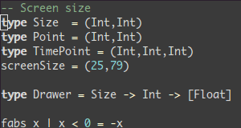

Vim 编辑器
安装Vim
在Ubuntu下，默认集成了最小化版本的Vim (Vim minimal)，完整版本可以通过APT包管理器直接安装
$ sudo apititude install vim
安装完成后终端输入vim即可运行Vim，先别着急使用，输入:q退出，后面再细说Vim的使用。
因为Vim采用设计不是很优秀的VimScript作为扩展语言，限制了扩展的功能开发，所以目前更多的插件是通过第三方的编程语言实现的，例如Perl、Python、Lua等。要支持这些插件，必须在编译Vim时指定相应的选项，而软件仓库的二进制版本有可能并没有开启这些扩展接口。输入
$ vim --version
可以查看vim是否开启了相应的扩展，python和lua接口比较重要。例如自动补全插件 Shougo/neocomplete.vim 必须要lua接口开启。如果安装的Vim没有开启这些接口，建议直接编译源代码，在./configure时加上--with-features=huge选项，参考: Building Vim。
通常Ubuntu软件仓库安装的Vim能够符合大部分插件的要求。Vim同样具有GUI前端封装的版本，最常用的是vim-gtk和vim-gnome，可以从图形界面运行。
配置文件和插件
Vim的配置文件在用户的家目录~下面，~/.vimrc是配置文件，插件放在~/.vim文件夹中。网上有很多用户将自己的配置文件和插件方案集成了脚本，方便其它用户快速地配置Vim和安装常用的插件。推荐大牛 Steve Francia 的spf13-vim
只需要输入一行指令
$ curl https://j.mp/spf13-vim3 -L > spf13-vim.sh && sh spf13-vim.sh
等待较为漫长的插件安装过程，安装完成后，在终端输入vim，第一印象是界面变好看kkkjjj了。下面开始使用Vim!
热身
打开Ubuntu终端，输入vim启动Vim
看到左下角的NORMAL了吧，表示目前正在NORMAL模式下，在这个模式下是不能输入文本的，要进行编辑，需要切换到INSERT模式。输入i即可进入INSERT模式
这个时候便可以像普通的文本编辑器一样输入文字了，注意到左下角的模式指示符变成了INSERT。在这个模式下面，插入、删除文本都是非常直观的。使用ESC键可以返回到NORMAL模式。在NORMAL模式下面输入:w test.txt可以将当前的文本保存为当前目录的test.txt文件，也可以用其他路径替代。输入:q可以退出Vim，输入:wq可以保存并退出Vim，也可以使用ZZ(大写)保存并退出Vim。
如果要编辑一个已经存在的文件，如家目录下面的.vimrc，可以vim ~/.vimrc即可直接打开文件进行编辑。
截至目前，能使用Vim像普通编辑器一样工作了，注意到要输入指令，需要在NORMAL模式下完成，而添加文本通过INSERT模式完成。流程: 打开文件(NORMAL) -> 进入INSERT模式(i) -> 退出INSERT模式(ESC) -> 保存退出(:wq)。
指令都是语义的，例如i表示 insert，:w表示 write，:q表示 quit。以:开头的指令，输入时会显示在左下角，称为底线(Last Line)指令，不以:开头的指令在输入时会显示在右下角。
再引入几个NORMAL模式下的指令：
x: 删除字符dd: 删除整行并压入剪切板p: 拷贝剪切板的内容- h/j/k/l： ← ↓ ↑ → 移动
0: 行首$: 行末w/b: 前进/后退一个单词
掌握了这些常用的指令并熟练使用，应该能够超过很大一部分Vim新手了。建议阅读完这一小节先跳过下一节，过几天后再看，这样曲线稍微平缓，也不容易半途而废。
进阶
在热身一段时间后，来进一步了解Vim的操作指令。热身阶段了解的指令，大部分是对应指令集合的子集。
首先看看Vim怎么查看帮助函数(文档)，这是学习任何东西最好的方式 - 阅读文档。:help后面加指令可以查看对应的文档，例如输入:help w

则会自动打开w的说明文档。
INSERT模式切换
除了i之外，还有几个指令可以切换到INSERT模式，不同的是切换后光标所在的位置，一并总结如下:
i: 在光标处插入a: 在光标之后插入o: 在下一行插入新行O: 在上一行插入新行cw: 删除光标所在位置到单词结尾的字符并放置光标
光标移动
光标移动的操作集合:
0: 行首$: 行尾^: 当前行第一个不是空白字符的位置g_: 当前行最后一个不是空白字符的位置gg: 到首行G: 到末行NG: 到第N行w: 下一个单词的开头e: 下一个单词的结尾 记住上面的指令还是挺困难的，不过 spf13-vim 集成了vim-easymotion插件，可以更方便地移动到任何地方

只需要输入,,w或,,b即可往前或往后移动，当然 vim-easymotion 还定义了许多移动的指令方式，相当于是Vim光标移动的一个超集，大家参考其网页各取所需吧。
剪切板
最常用的拷贝和粘贴:
yy: 复制一行p/P: 粘贴在下一行/上一行
撤销操作
撤销/重做操作:
u: 撤销Ctrl+r: 重做
文件读写
打开、存盘、退出等操作
:e: 加上文件路径，打开文件:w: 存盘:saveas: 加上文件路径，另存为文件wq: 保存并退出
搜索
使用/加上字符串则可以对给定的字符串在文本中进行查找，使用n光标跳到下一个匹配处，N光标跳到上一个匹配处。另外比较方便的查找指令包括：
#: 匹配当前光标所在的单词，并跳到当前光标后第一处匹配*: 匹配当前光标所在的单词，并跳到当前光标前第一处匹配
熟练掌握上面的指令，在文本编辑上完爆大多数人，应该不是很大的问题，下面进一步拓展语义指令的定义。
重复操作
在指令里加入数字，可以方便地执行指定次数的指令，例如：
3yy: 复制3行5p: 粘贴5次10dd: 删除10行10w: 前进10个单词
另外还可以输入.来重复最近的一次操作，5.则表示重复5次最近的操作。
区域操作: in 和 all
Vim可以方便地对某个区域内的字符串进行操作，格式是：操作+i/a+字符，操作支持d,y,v等，i表示in，即在字符内的片段，a表示all，即包括给定字符的片段。这一部分较难阐述，还是举个栗子比较容易明白，例如给了一个字符串:var dict = {'name':'小茗', 'age':'23'}，输入：
vi{: 可视化选择{包围的部分，即'name':'小茗', 'age':'23'va{: 可视化选择包括{}的部分，即{'name':'小茗', 'age':'23'}di': 删除nameda': 删除'name'
多行编辑
使用Ctrl+V，然后j/k上下选择多行，然后I/A进行插入，再ESC，即可完成对选定行的相同操作，示例(credits：陈皓)

宏操作
宏操作可以把重复性的工作封装进一个宏，这样可以减少重复进行某一个操作的工作量。使用qa开始将宏录制到寄存器a中，然后开始一系列的操作，完成后q退出宏录制，使用@a调用宏，使用100@a就可以调用100次宏。示例，把删除一行的最后一个字符的操作录制成宏: qa$xq，使用@a就可以把当前行的最后一个字符删除，除了a之外，还支持使用其它寄存器。
指南
看过上面的内容估计头已经晕了，现在把它们都忘掉，打开vim，输入:Tutor阅读一遍Vim的自带指南，过程中注意理解指令的设计思想，读完之后，应该就能像张无忌一样上场了;-)
插件功能
除了Vim本身提供的语义序列操作思想外，丰富的插件大大优化了文本编辑体验，下面附上常用的插件及其出处，插件都有自己详细的文档作为使用说明，按需选择即可。下面的插件都是默认通过spf13-vim配置好的。
通用编程
| Plugin | For What? |
|---|---|
| Shougo/neocomplete.vim | Auto completion |
| Raimondi/delimitMate | Auto-completion for quotes, parens, brackets, etc. |
| scrooloose/syntastic | Syntax checking |
| scrooloose/nerdcommenter | Intensely orgasmic commenting |
| godlygeek/tabular | Text filtering and alignment |
| easymotion/vim-easymotion | Motion on speed |
| Shougo/deoplete.nvim | Auto Completion |
视觉增强
| Plugin | For What? |
|---|---|
| scrooloose/nerdtree | Tree explorer |
| flazz/vim-colorschemes | Colorscheme pack |
| bling/vim-airline | Status/tabline |
| nathanaelkane/vim-indent-guides | Visually displaying indent levels |
| bronson/vim-trailing-whitespace | Highlights trailing whitespace in red and provides :FixWhitespace to fix it. |
| kien/rainbow_parentheses.vim | Better Rainbow Parentheses |
版本控制
| Plugin | For What? |
|---|---|
| mhinz/vim-signify | Show a diff via Vim sign column |
python增强
| Plugin | For What? |
|---|---|
| klen/python-mode | "The plugin contains all you need to develop python applications in Vim." |
Web开发
| Plugin | For What? |
|---|---|
| HTML-AutoCloseTag | Automatically closes HTML tags once you finish typing. |
| gorodinskiy/vim-coloresque | Visualizing web colors |
| hail2u/vim-css3-syntax | CSS3 syntax support |
书写环境
| Plugin | For What? |
|---|---|
| plasticboy/vim-markdown | Markdown syntax highlighting, matching rules and mappings |
| junegunn/goyo.vim | Distraction-free writing |
| junegunn/limelight.vim | Hyperfocus-writing |